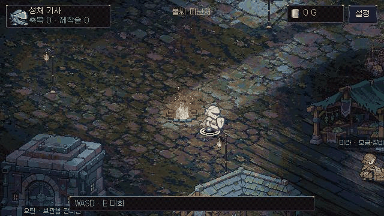

Tracefolio REPORTS & ISSUES
Tracefolio REPORTS & ISSUES 캠프 가디언작업 결과
캠프 가디언작업 결과캐릭터 근접광 입체 명암과 자동 추정 노멀
검증 대기마을 플레이어와 NPC가 모닥불·등불·가로등 방향에 따라 입체적인 도트 명암을 표시합니다.
작업 결과
마을 플레이어·NPC 조명 구현·저장·Godot 실제 렌더 확인 완료. 원본 보존. 게임 EXE 빌드·배포 미실행.
변경 내용
적용 내용
actor_relief.gd에서 현재 정규화된 배우 텍스처의 알파 실루엣과 약한 명암으로 기술용 노멀을 메모리 파생·캐시합니다. actor_relief.gdshader에서 빛의 방향·거리·높이와 4단계 명암을 계산합니다. town.gd/town_life.gd에 연결해 모닥불·NPC 등불·가로등을 반영하며 바닥·FX·UI·선택 외곽선은 유지합니다. 아트 가이드·스타일 JSON·변경 이력에 적용 범위를 기록했습니다. 원본 이미지 변경이나 기존 사용자 수정 덮어쓰기는 없습니다.
검증
Godot 4.7.2 실제 OpenGL GTX 970 렌더 75프레임/12FPS 영상 저장. 캐시22개·광원21개 연결 확인. 실제 PNG에서 기존 도트 실루엣·마을 조명 합성을 확인했습니다. 초기 GDScript 타입 추론 오류는 명시적 Vector2i로 수정한 뒤 실제 실행에 성공했습니다. 별도 테스트·회귀는 수행하지 않았습니다.

남은 사항
자동 추정 노멀이므로 수제 표면 노멀만큼 정교하지 않으며 실제 3D 형상/광원 차폐는 없습니다. 전투 FX의 광원화는 이번 구현에 포함하지 않았습니다. 전체 클래스·NPC 개별 근접 조명 및 체감 성능은 미확인입니다. 종료 시 기존 보고에도 기록된 GL 텍스처3개 해제 경고가 남았습니다. EXE 빌드·게임 배포 미실행. 중앙 푸시·배포는 별도 상태로 보고합니다. 기존 지침과 대조해 별도 교훈 추가 없음.
작업 시간
- 제안 시간: 2026-11-17 18:48:00 KST 시작, 약8~10분.
- 실제로 완료된 시간: 구현·실제 렌더 확인 2026-11-17 18:52:00 KST, 실측4분. 결과 보고 작성 18:53 KST.
- XERJ: 미사용 — rg로 마을 배우·조명·캐시 연결을 확인했습니다.